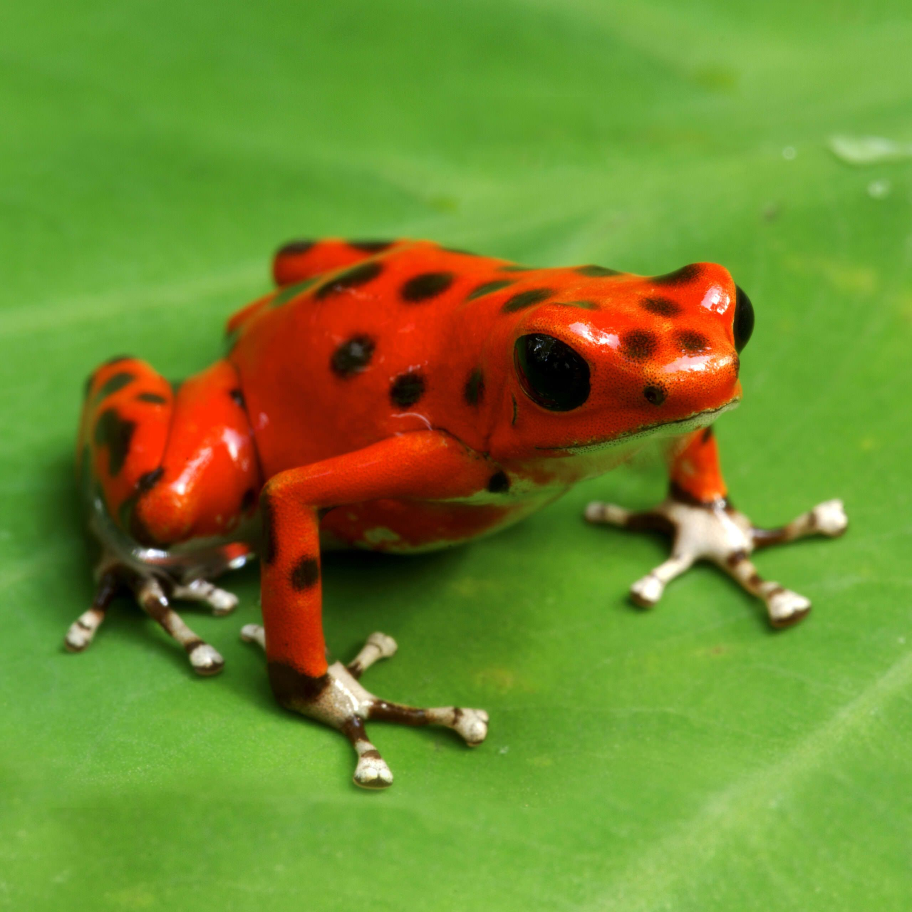
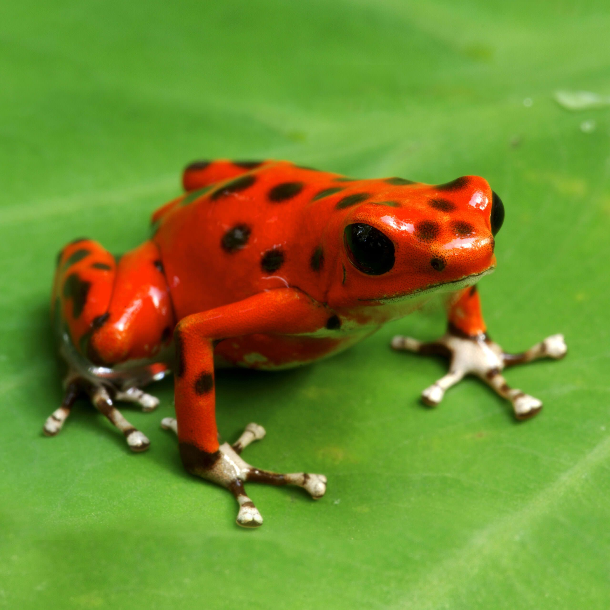

Welcome to the Jungle
Posisonous Frogs
Posion Frogs are the most brightest frogs in the world and, they are cosnider one of the most posisonous animals in the world. They produce enough posion to kill 10 humans. They live in wet, tropical places in Central and South America. The frogs bright colors are a warning to predator to stay away. Posion frogs eat manily ants and termits because,they are so tiny. An avarge Posisonous frog is about 0.75 to 1.5 inches. Even though they are very tiny whenever you see one of these bright little frogs stay away.
 
